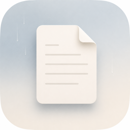
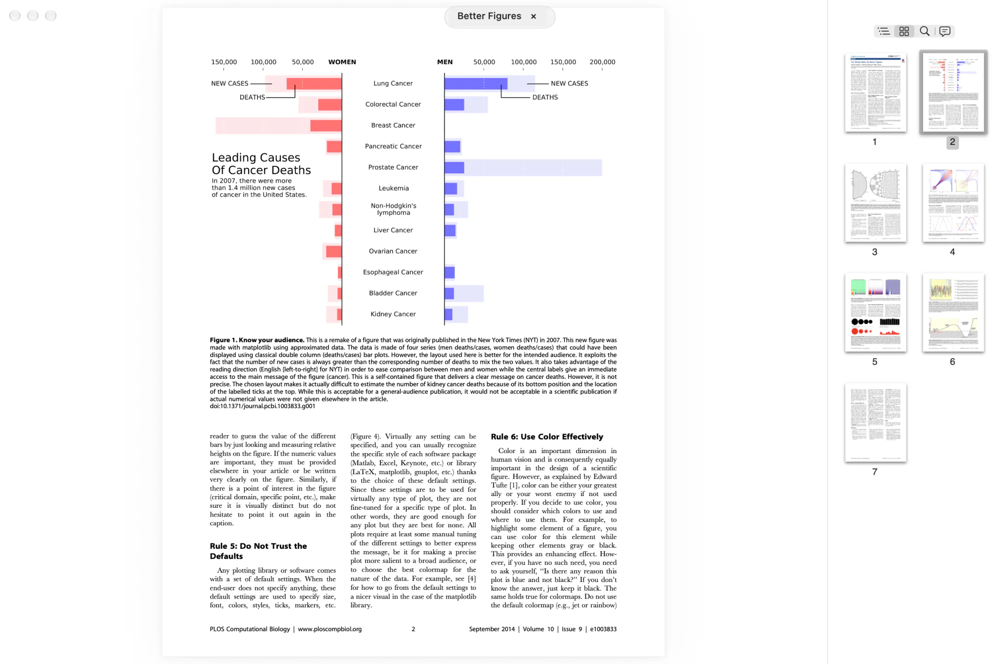
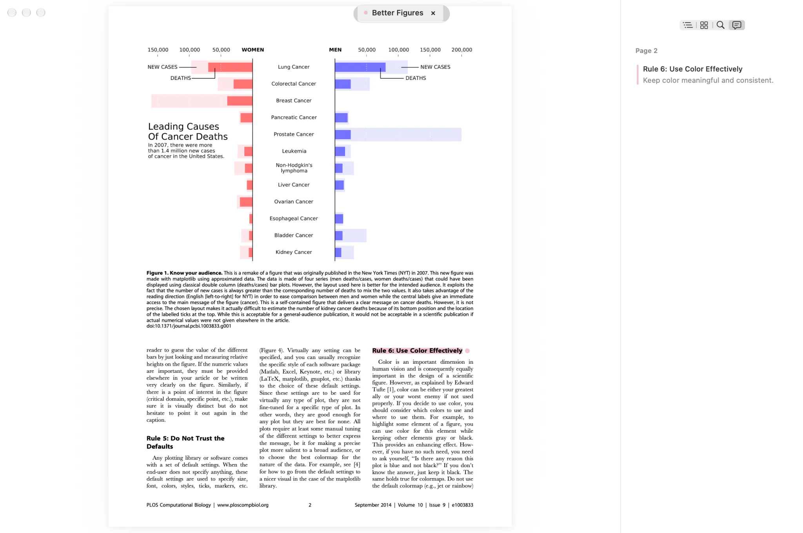
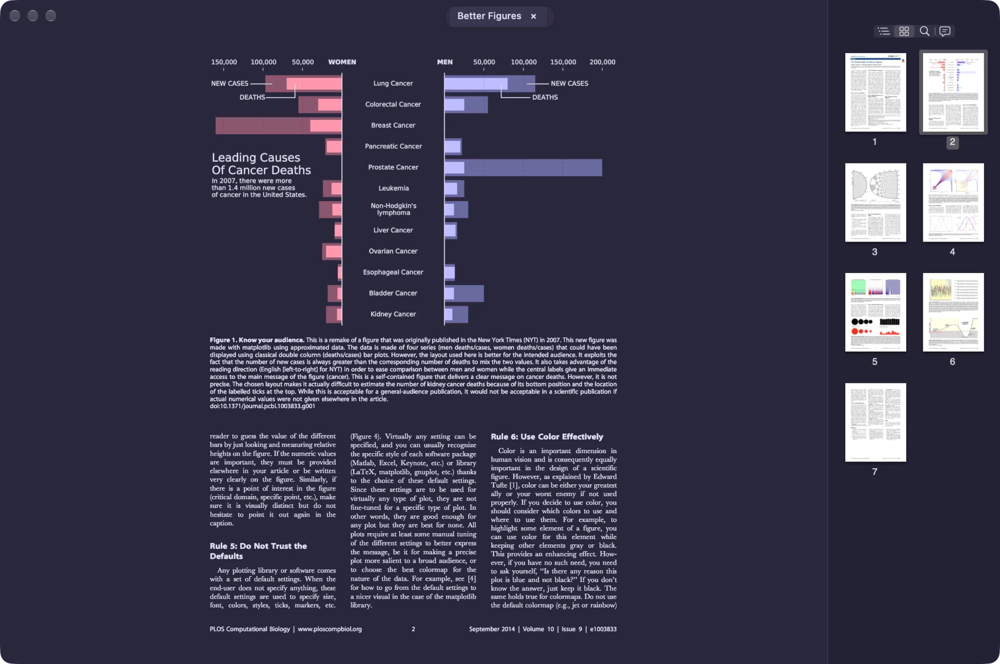

Find your way.
Browse the outline, search your open PDFs, and preview a reference while keeping your place.

SereinA PDF reader for Mac
A thoughtful place for your papers and books. Read, annotate, and follow an idea across documents.
Download for MacFree & open source · macOS 14+ · Apple silicon

For the way you read
Browse the outline, search your open PDFs, and preview a reference while keeping your place.
Highlight a line. Add a thought beside it. Keep annotations in the PDF and export your notes as Markdown.
Keep related PDFs in spaces. Split your view to compare pages, each with its own position and zoom.

A note in the margin
A useful sentence. A question for later. Mark the passage and leave a comment right beside it.
From morning to midnight
Choose light and dark themes, then make the paper and window colors your own.

Native windows, familiar controls, and your local files. Open a PDF and start reading.
Turn pages with J and K. Find a command with ⌘K. Set your own shortcuts.
Compile in LaTeX or Typst. Your PDF updates in place and keeps your reading position.
Serein requires an Apple silicon Mac with macOS 14 or later. Selection translation uses Apple’s translation service and requires macOS 15 or later.
Open the downloaded DMG and drag Serein into Applications. This build is not notarized. If macOS blocks the first launch, use System Settings → Privacy & Security → Open Anyway.
Apple’s installation guideYes. Serein is free and open source under the GPL-3.0 license. You can browse the code, report a bug, or contribute on GitHub.
Saved highlights and comments are written to your PDF. You can also export annotations as Markdown, plain text, or JSON, or export a clean PDF copy.
Open a PDF. Settle in.
Download for Mac Release notes & other downloads